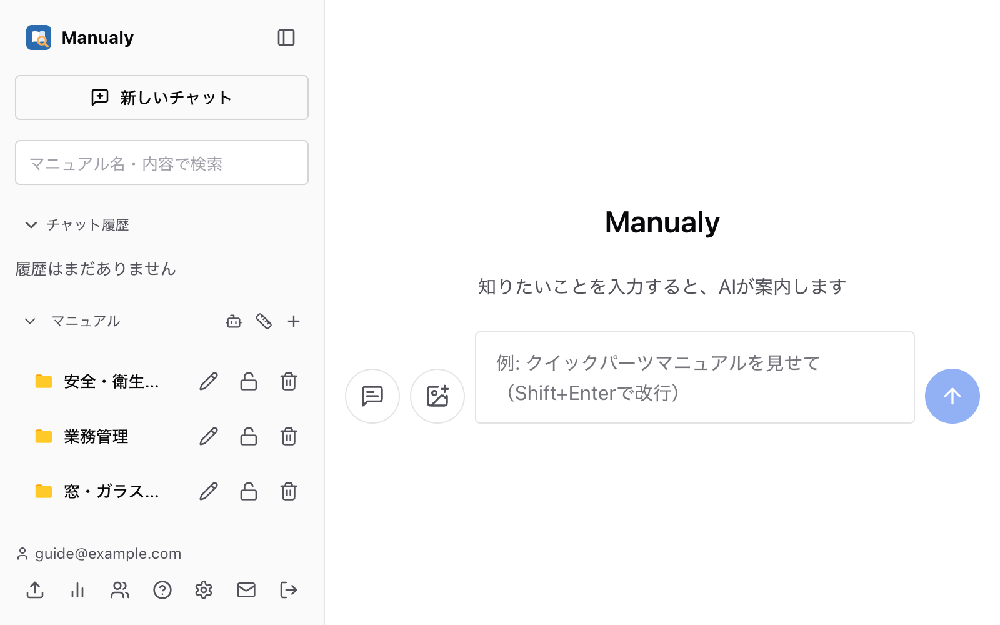
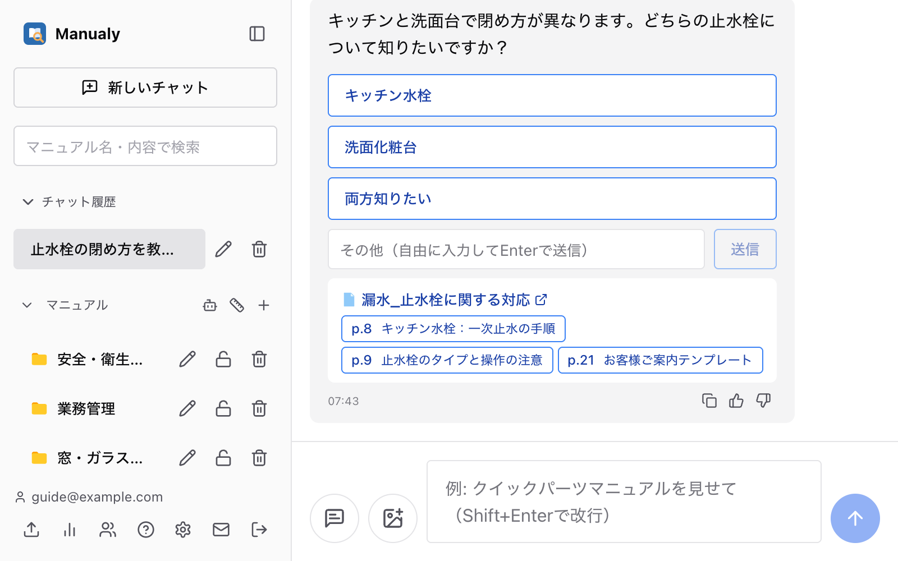
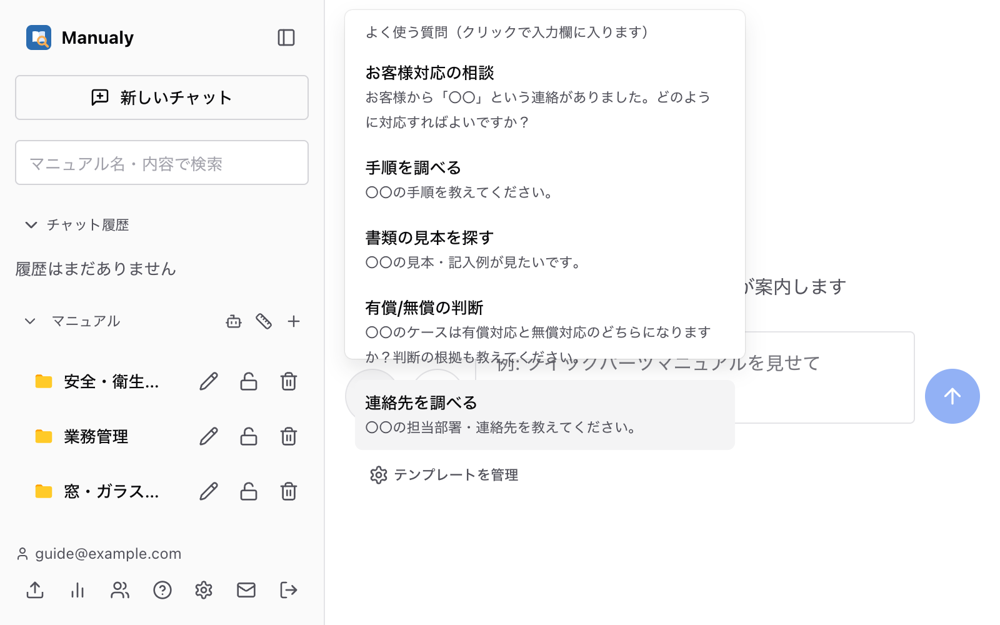
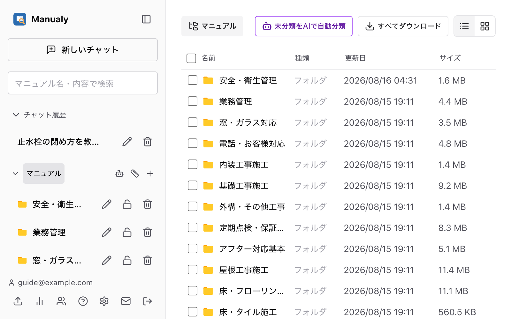
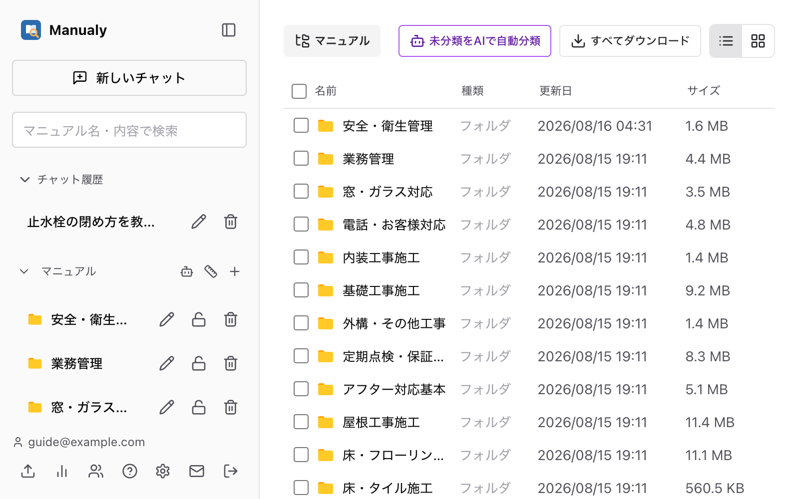
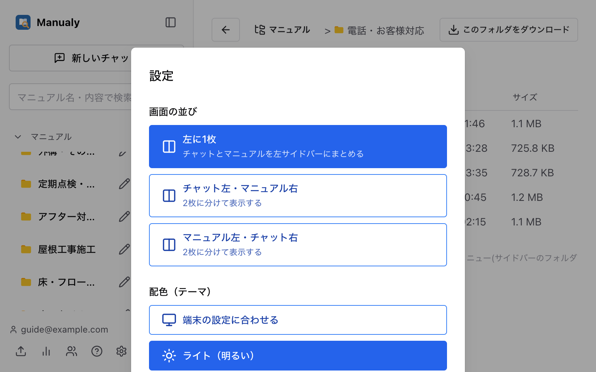
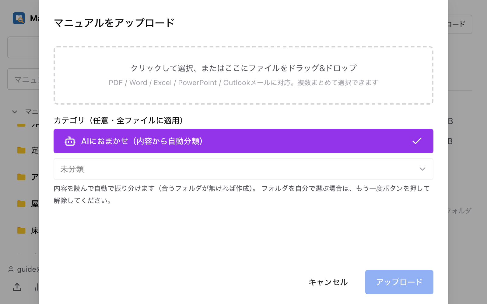
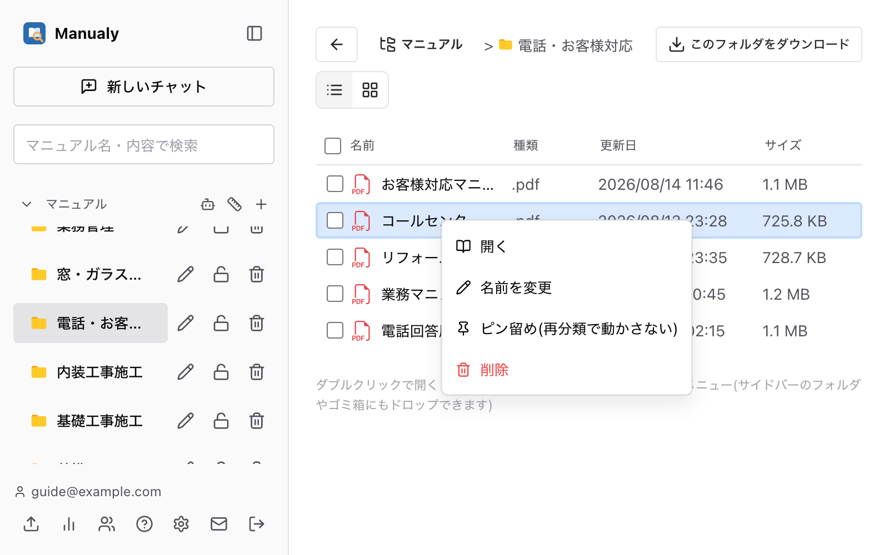

このシステムは、社内マニュアル(PDF)をAIに質問しながら探せる検索サイトです。 「どのマニュアルを見ればいいか分からない」状態から、話し言葉のまま質問して答えにたどり着けます。 このガイド自体もマニュアルとして登録されているので、チャットで「使い方を教えて」と聞いても案内されます。
画面中央の入力欄に知りたいことを書いて、右の矢印ボタンで送るだけです。話し言葉のままで大丈夫です。回答は書き上がるそばから流れて出ます。
Enterで送信します（設定で「Shift+Enterで送信」にも変えられます）。日本語変換の確定Enterでは送信されません。

回答の下に、根拠になったマニュアルのカードが表示されます。マニュアル名や「p.3」のようなページボタンをクリックすると、そのページが直接開きます。ページボタンにマウスを乗せると該当箇所の抜粋が見えます。
スマートフォンでは、PDFは別のタブで開きます（埋め込み表示では1ページ目しか読めないため）。

質問が広いと、AIが状況を絞り込むための選択肢ボタンを出します。当てはまるものをクリックするだけで答えられます。当てはまらない場合は「その他」欄に自由に入力してください。
入力欄の左にある吹き出しアイコンを押すと、定型文の一覧が開きます。選ぶと入力欄に入り、「〇〇」の部分が選択状態になるので、そのまま打ち替えれば質問が完成します。

入力欄の左の画像アイコンから、または画面を撮ってそのまま貼り付け（Ctrl+V / ⌘V）で添付できます。4枚まで（PNG / JPEG / WebP / GIF、1枚4MBまで）。サムネイルを押すと拡大して確認でき、角の×で1枚ずつ取り消せます。文章を書かずに画像だけで質問することもできます。
回答の右下の👍/👎で、役に立ったかどうかを伝えられます。👎のときは理由（マニュアルが無い・内容が古い・欲しい答えと違う）も選べます。この評価は「足りないマニュアル」を見つけるために使われるので、うまく答えられなかったときこそ押してください。もう一度押すと取り消せます。
回答の生成中は送信ボタンが「停止」に変わり、押すと中断できます。停止した質問は保存されないので、質問の吹き出しの鉛筆アイコンで入力欄に戻し、書き直して再送信してください。
各吹き出しの右下のコピーアイコンで、本文全体をコピーできます。メール文例やお客様への説明文が入った枠には右上に専用の「コピー」ボタンがあり、その部分だけを取り出せます。
サイドバーの「マニュアル名・内容で検索」にキーワードを入れてEnterを押すと、タイトルと本文の両方を検索します。一致した箇所は黄色くハイライトされます。
サイドバーの「マニュアル」を押すと、Windowsのエクスプローラーのようなフォルダ一覧が開きます。フォルダやマニュアルはダブルクリックで開きます（1回クリックは選択です）。

一覧の右上のボタンで「詳細」（行表示）と「中アイコン」（グリッド表示）を切り替えられます。詳細表示では「名前」「種類」「更新日」「サイズ」の列ヘッダーをクリックすると並べ替えられます。ファイル形式ごとのアイコンが付くので、PDFとExcelを一目で見分けられます。
「更新日」は元のファイル自身の最終更新日です（手元のパソコンやBoxで見えている日付と揃います）。

チェックボックスで選んで「ダウンロード」を押すと、1件ならそのまま、複数ならZIPにまとめて保存できます。フォルダごと選ぶこともできます。
名前の横にオレンジの時計が付いているものは「取り込み中」で、AI検索にはまだ出てきません。赤い三角は取り込みに失敗しています（管理者にお知らせください）。何も付いていなければ検索できる状態です。
サイドバー下部の「設定」から変えられます。変更は即座に反映されます。
スマートフォンでは、送信キーと画面の並びの設定は出ません。

サイドバーの端をドラッグすると幅を調整できます。上部のパネルアイコンで折りたたみもできます。「チャット履歴」「マニュアル」の見出しを押すと、それぞれを畳めます。設定はブラウザに記憶されます。
画面のどこでも横にスワイプするとサイドバーが開きます（もう一度スワイプで閉じます）。右上のボタンから、サイドバーを開かずに新しいチャットを始められます。一覧はタップ1回で開きます。
ホーム画面に追加すると、アプリのように全画面で使えます。
言い方を変えて聞き直すか、キーワード検索も試してください。回答に👎を付けておくと、管理者が「足りないマニュアル」として気づけます。それでも見つからない場合は問い合わせで教えてください。
サイドバー下部の「問い合わせ」から、不具合の報告・使い方の質問・追加してほしいマニュアルなどを管理者へ送れます。ログイン中のメールアドレスも一緒に送られるので、返信もできます。
画面の写真を5枚まで添付でき、貼り付け（Ctrl+V / ⌘V）でも添えられます。書きかけの内容は閉じても残ります（再読み込みで消えます）。
サイドバーの「マニュアルを追加」からファイルをドラッグ&ドロップします（複数まとめて可）。PDFのほかWord・Excel・PowerPoint・Outlookメール(.msg)にも対応しています。分類先は「AIにおまかせ」が既定で、内容を読んで自動でフォルダに振り分けます（合うフォルダが無ければ新しく作られます）。取り込みが終わると、どのフォルダに入ったかが1件ずつ表示されます。
文字が入っていないスキャンPDFは、AIが画像を読んで文字を起こすので検索できます。

同じファイル名のファイルをアップロードすると、更新日が新しい方だけが残ります。誤って古い方をアップロードしてもスキップされます。
右クリック →「名前を変更」でマニュアル名を変えられます。名前もAI検索の手がかりに使っているため、変更すると裏側で検索用のデータも作り直されます。
取り込みに失敗したマニュアル（赤い三角）は、右クリック →「再取り込み」でやり直せます。削除するとゴミ箱に入り、サイドバーの「ゴミ箱」から元に戻せます。
サイドバーの「＋」で作成、鉛筆アイコンで名前変更、ゴミ箱で削除ができます。削除すると中のマニュアルも一緒にゴミ箱へ移り、あとで元に戻せます。フォルダ自体をドラッグすると並び順を変えられます。
作成時のチェック、または鍵ボタンで「管理者だけに表示する」に切り替えられます。中のマニュアルは、一般の利用者の一覧・キーワード検索・AIの回答のどこにも出てきません。人事や取引条件のように、全員には見せられない資料を置くための箱です。
AIの自動分類も、このフォルダには出し入れしません（勝手に全員へ見える場所に出されないため）。
マニュアルをドラッグして、一覧またはサイドバーのフォルダへドロップします。「未分類」に落とすと分類を外せます。
右クリック →「ピン留め」で、そのマニュアルをAIの再分類から保護できます。付け外しは手動のみで、移動しても勝手に変わりません。

サイドバーのロボットアイコンで、全マニュアルをAIが分類し直します（数分かかります。ピン留めされたものは動きません）。選んだファイルだけ・未分類のものだけを対象にするボタンは一覧のツールバーにあります。再分類で空になったフォルダは、終わったあとに片付けるかどうかを選べます。
サイドバーの定規アイコンから、AIに教える分類の決まりごとを登録・編集できます。アップロード時の自動分類と再分類の両方に適用されます。
管理者は、チャットに話しかけるだけで次の操作ができます。
一般ユーザーがこれらを頼んだ場合は、管理者のみが行える操作である旨が案内されます。
サイドバー下部のグラフアイコンから開きます。このシステムの値打ちはマニュアルが育つことなので、「次に何を用意すべきか」が分かるようにしてあります。
利用者が👎を押した質問と、AIが「マニュアルに根拠が無い」と判断した質問が並びます。ここに出てくる内容が、次に用意すべきマニュアルの候補です。
各質問の「この質問から下書きを作る」を押すと、関連する既存資料を材料にAIが章立てと本文案を書きます。その場で手直しでき、コピーまたは.mdファイルで保存できます。
分からないことは「(要確認)」として空けてあります。推測で埋めない作りにしてあるので、そこは事実を確かめてから書いてください。
「AIでまとめる」を押すと、言い回しが違うだけの質問をテーマごとにまとめて数えます。件数が多いものはテンプレートに登録しておくと、利用者が毎回入力せずに済みます。
回答の根拠として使われた回数が見られます。0回が続くマニュアルは、内容が古い・探しにくい・そもそも不要、のいずれかを疑えます。
サイドバーの「ユーザー管理」から、メールアドレスでの招待（仮パスワード付きの招待メールが届きます）、一般/管理者の権限切り替え、削除ができます。
チャットのテンプレート一覧の下にある「テンプレートを管理」から、よく使う質問の追加・編集・削除・並び替えができます。本文に「〇〇」を入れておくと、挿入時にその部分が選択状態になり、利用者がすぐ打ち替えられます。